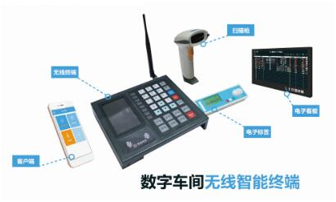

智能制造时代：企业实施MES系统，不能忽视的问题
中之杰MES系统，行业领先，帮助台州、温州、宁波、杭州、苏州、常州等江浙地区中小制造企业实现智能化、数字化生产，咨询热线：400-090-3335。
智能制造势不可挡，但是企业需要明确，智能制造只是手段，不是目的。企业应当积极学习各种智能制造新兴技术，来帮助企业提高效益，MES车间生产管理系统，更好地助力企业实现生产车间数字化、智能化、看板化，实现精益生产。
目前，浙江多地（杭州、宁波、金华、湖州、温州）的企业都成功上线了中之杰MES车间生产管理系统，也拥有了许多优质的客户案例，拥有强大的研发团队和实施专家队伍，经验丰富，扎根江浙沪地区的制造业十余年。因此，台州地区的制造企业选MES厂商可优先考虑中之杰。
企业上MES势在必行，但在使用MES系统前不能忽视的一点就是：你现有的MES系统是否能满足随着业务发展而变化的企业需求？成功运用MES系统可以帮助企业迅速实现业务发展，特别是智能制造时代背景下，企业进入蓬勃发展时期，运用企业信息化管理手段可以更好地把握先机，所以，选择中之杰MES系统，是个明智的选择，中之杰MES系统可以满足企业业务拓展需求，随你的业务发展而发展。
另外，很多企业ERP、MES、PLM等软件处于一个孤立的状态、可能还使用的是3个不同的品牌。而中之杰使用特有的数据接口，帮助企业打通信息孤岛、让数据流通起来，中之杰是信息化整体解决方案提供商，实现了ERP、MES、PLM领域的一体化集成，更好地帮助企业实现信息化建设，实现智能制造。
中之杰与宁波、杭州、、温州、湖州、西安、苏州、无锡、常州、上海等江浙沪地区的数千家企业建立了长期的合作关系，台州中小制造企业可放心选择中之杰MES系统。
您可能还想了解下列文章：